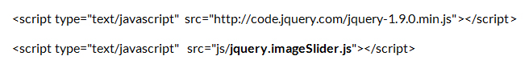
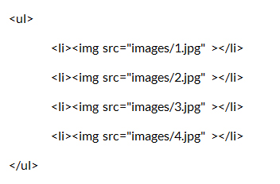
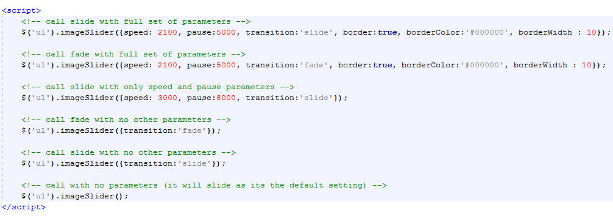

Instructions:
Step 1: Add the links. For example "jquery.imageSlider.js" file is in "js" folder in my case.

Step 2: Make a un-ordered list of images anywhere in your html file. Don't go to add any styles since styling canvas
be done using the calling function.

Step 3: Call any one of following ways to add the sliding or fading effect for all the images you have within ul tags.
